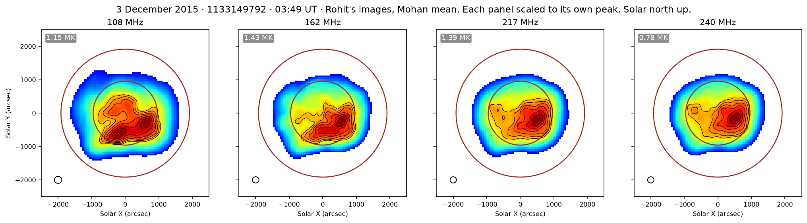

Quiet Sun
3 December 2015
Two Sun scans. Maps on both.
03:39–03:44 UT
- Time
- 03:39–03:44 UT
- Observation
- 1133149192
- Elevation
- 83.4°
- Hour angle
- —
- Azimuth
- 46.3°
- Zenith
- 6.6°
- Calibrator
- CenA · 1133139776
- P-angle
- +15.4°
- Images
- CASA SuperUniform, 570 × 0.5 s
- Flux
- Haslam 1982 at this pointing

Haslam et al. 1982 at this pointing, 3 December 2015 03:42 UT. Tile beam 90 / 9 / 0.9 % on the right. Sun in yellow.

Solar north up. Peaks at 108 MHz: 0.89 / 0.89 / 0.82 / 0.83 million K. At 162 MHz: 0.99 / 1.01 / 0.88 / 0.90. At 217 and 240 MHz P-AIRCARS is noise.

Our remake, mean of 570 SuperUniform frames. Peaks 0.89 / 1.01 / 1.10 / 0.63 million K. Each panel scaled to its own peak.
3 December 2015, 03:39–03:44 UT
03:49–03:54 UT
- Time
- 03:49–03:54 UT
- Observation
- 1133149792
- Elevation
- 84.7°
- Hour angle
- -0.16 h
- Azimuth
- 28.4°
- Zenith
- 5.3°
- Calibrator
- CenA · 1133139776 · -2.78 h (within 24 h)
- P-angle
- +15.4°
- Images
- Rohit's SuperUniform FITS, 570 × 0.5 s
- Flux
- Haslam 1982 at this pointing

Haslam et al. 1982 at this pointing, 3 December 2015 03:52 UT. Tile beam 90 / 9 / 0.9 % on the right. Sun in yellow.

Rohit's images, mean of 570 × 0.5 s after Mohan 5σ. Haslam 1982 at this pointing, not Oberoi 2017 Table 1. Solar north up. Each panel scaled to its own peak. Peaks 1.15 / 1.43 / 1.39 / 0.78 MK. Whole-Sun flux 3.52 / 8.15 / 14.61 / 9.67 solar flux units. Mohan F(ν) = 41 / 302 / 49 / 103. The 162 MHz conversion is large; the mean is still a disk.